Universal Violet
Sneeuw −10 tot −20 °CNov – jan
Voor de koude maanden en zomergletsjers.
Glijdt snel op koude, droge sneeuw en beschermt je belag tegen slijtage. De makkelijke keuze voor een week wintersport.
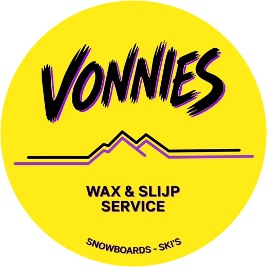
VonniesAan de spullen mag het niet liggen
Voor ski’ers en snowboarders uit Ridderkerk, Rotterdam en omgeving. Met de hand gewaxt en geslepen, op wedstrijdniveau, voor iedereen.
Authentiek en eerlijk vakmanschap: hotwax voor diepe voeding en een glijlaag die lang meegaat. Geslepen zodat jij elke bocht met precisie maakt.
Geen wasstraat, geen haastklus. Elke ski en elk board gaat door mijn handen, met aandacht voor ieder detail.
Jij kiest hoe scherp en welke wax, afgestemd op hoe en wanneer je rijdt. Of je vraagt gewoon wat het beste is.
Ik verkoop zelf geen materiaal, dus ik praat je nooit iets aan. Is iets echt niet meer te repareren of niet meer veilig? Dan zeg ik dat eerlijk. En je mag altijd even meekijken in de werkplaats.
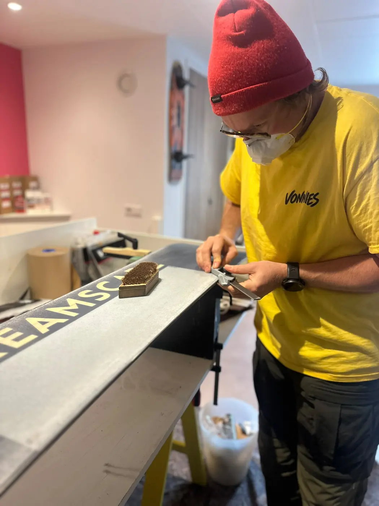
Ik ben Jeroen, wintersportgek. Sommige mensen gaan één keer per jaar naar de sneeuw. Ik begin al af te tellen zodra ik weer thuis ben. De bergen, verse sneeuw en die eerste afdaling: daar word ik blij van.
Al dertien jaar wax en slijp ik ski’s en snowboards. Wat begon met mijn eigen materiaal, groeide uit tot een flinke dosis ervaring en liefde voor het vak. Want goed materiaal maakt het verschil: scherpe kanten en een goede waxlaag geven je meer vertrouwen op de berg.
Die kennis houd ik liever niet voor mezelf. Met Vonnies doe ik waar ik zelf enthousiast van word: jouw spullen met de hand onderhouden, alsof het mijn eigen spullen zijn. Of je nu gaat voor strak gesneden bochten, verse poeder of gewoon een heerlijke dag op de piste.
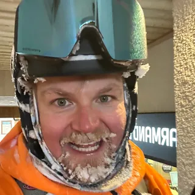
Tot snel,Een kijkje in mijn werkplaats aan de Vossiusstraat, en op de berg.
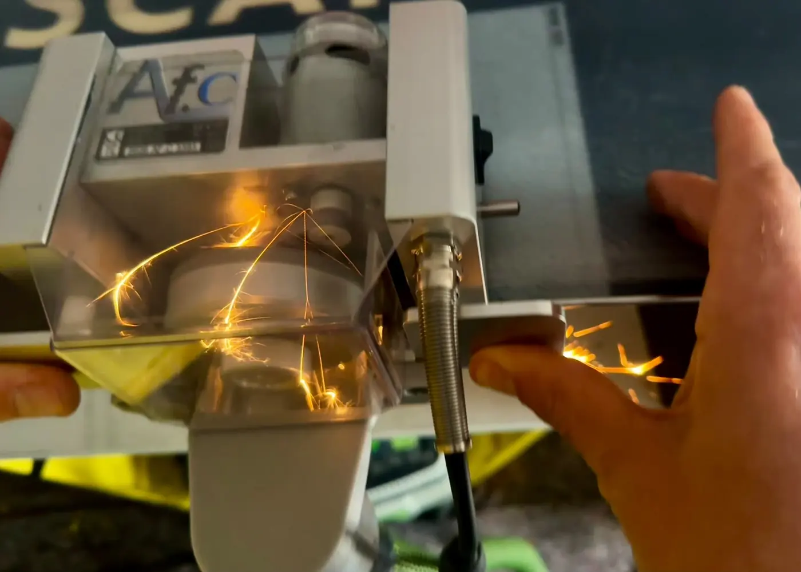
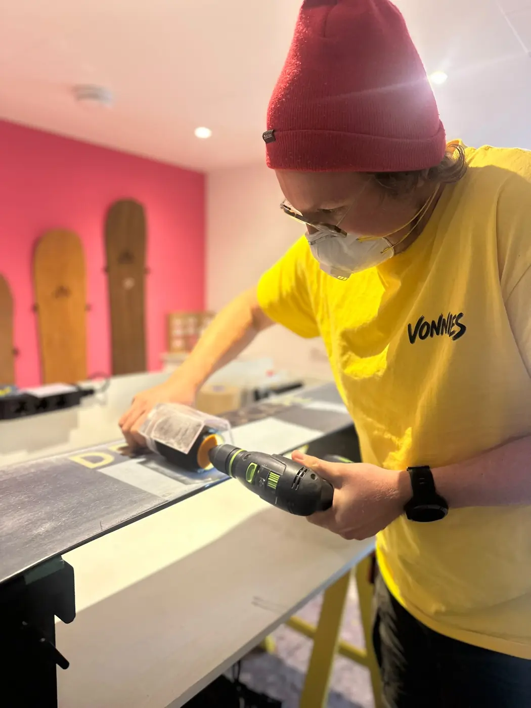
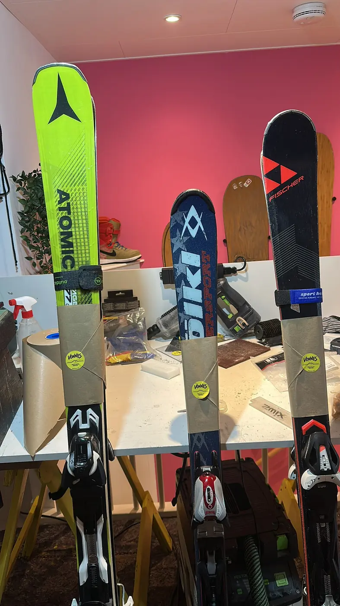
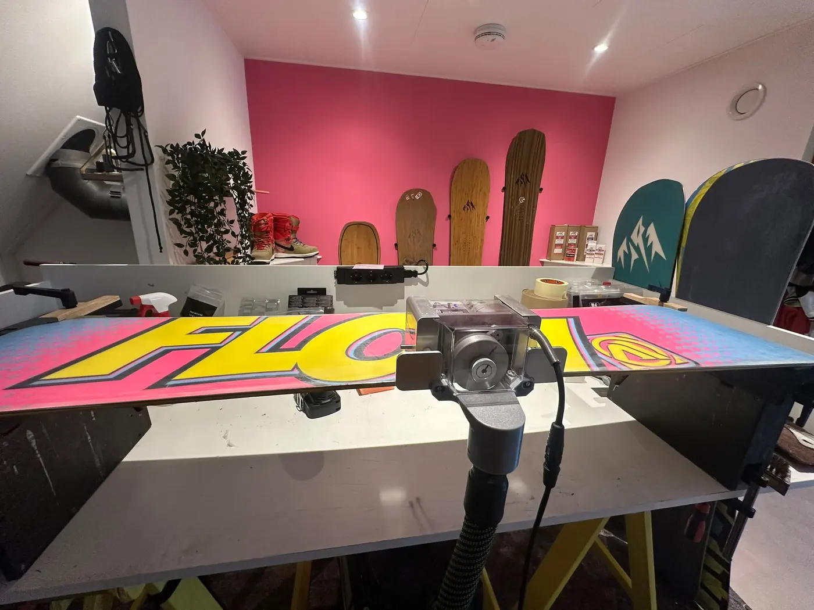
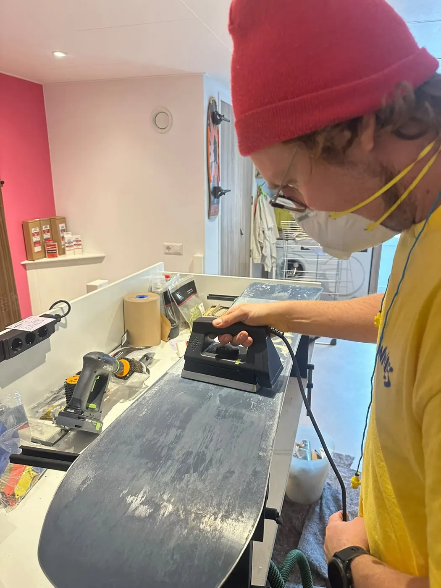
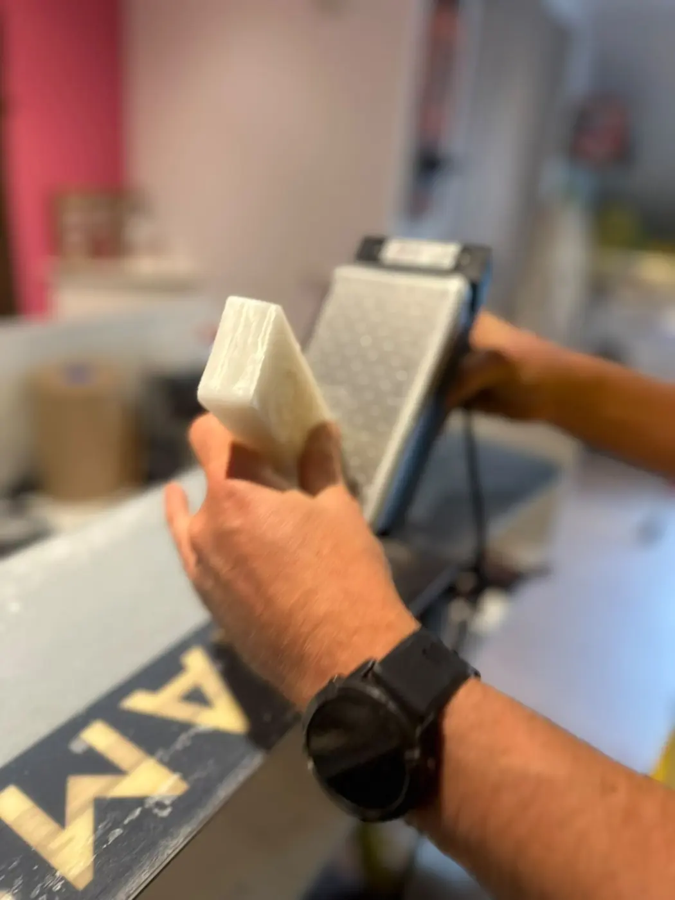
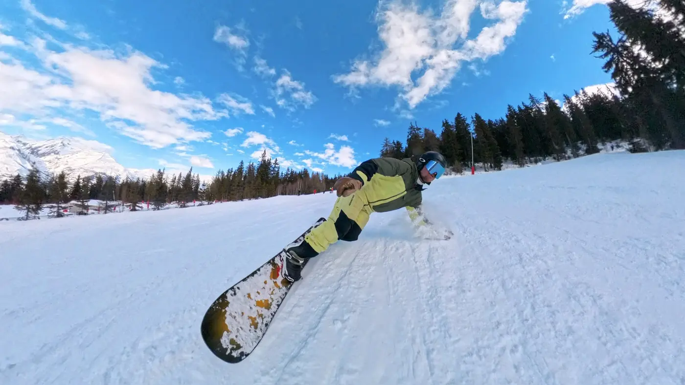
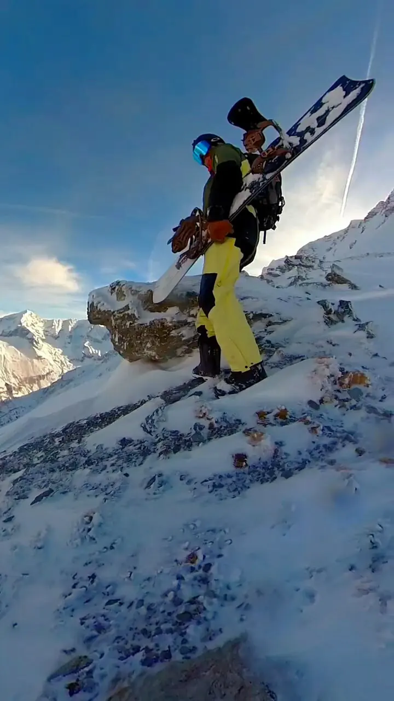
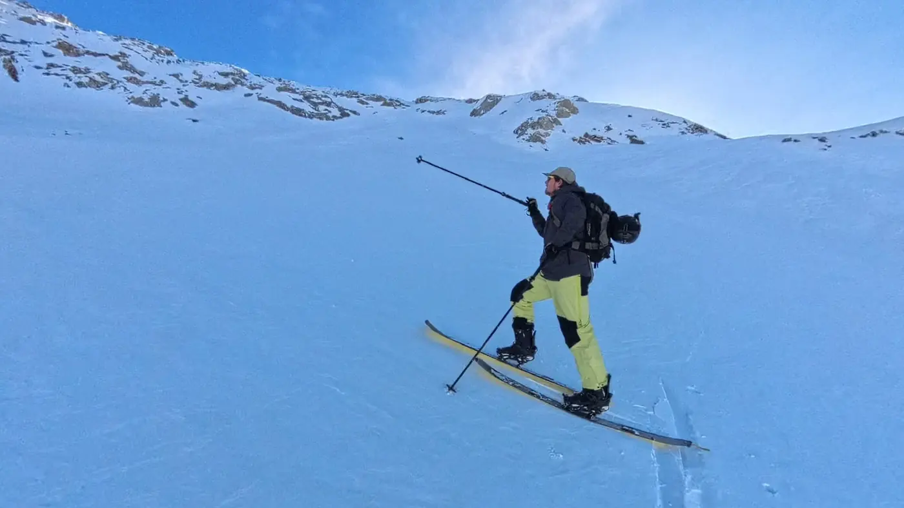
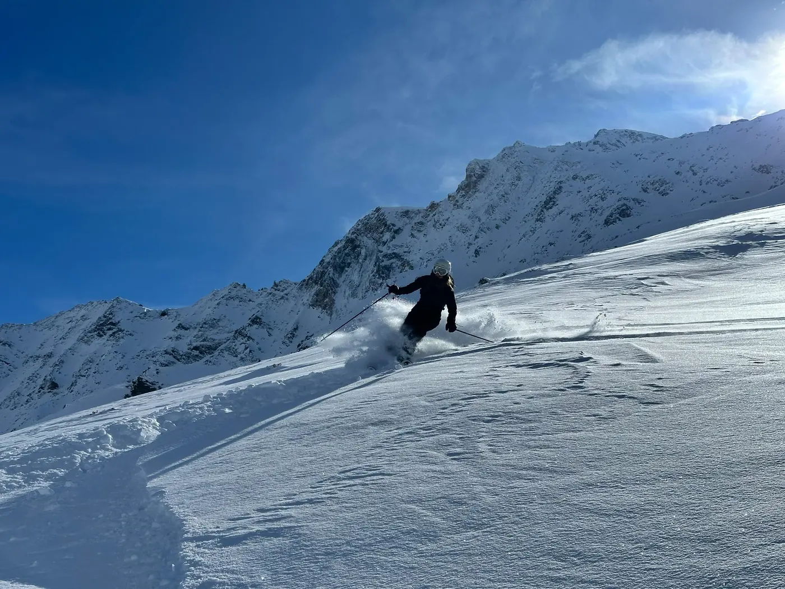
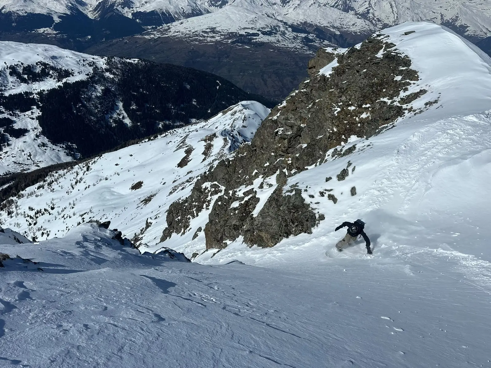
| Behandeling | SKI | SNOWBOARD |
|---|---|---|
| Alleen waxenHotwax, gewoon met de hand | €20 | €25 |
| Waxen + slijpenMeerdere slijpgraden mogelijk | €35 | €35 |
| Waxen + slijpen + vullenDe complete beurt | €45 | €45 |
+ topsheetreiniging €2,50 extra
Zet alles netjes weg met zomerwax. Dan droogt je belag niet uit en staat je materiaal volgend seizoen weer klaar.
Welke wax en hoe scherp? Beantwoord drie vragen en je weet wat je kunt vragen. Twijfel je nog, dan denk ik gewoon met je mee.
Kies bij elke vraag een antwoord, dan zie je hier het advies.
De piste bepaalt, niet het weerbericht. Sneeuw is door uitstraling vaak 2 tot 5 graden kouder dan de lucht, dus we kiezen op sneeuwtemperatuur. Kunstsneeuw en ijs schuren: dan kies je een hardere wax. Alles is fluorvrije wax van ARC uit Italië, met de hand ingestreken.
Voor de koude maanden en zomergletsjers.
Glijdt snel op koude, droge sneeuw en beschermt je belag tegen slijtage. De makkelijke keuze voor een week wintersport.
Voor sportieve rijders op koude, harde pistes.
Harder en slijtvaster dan Red. Blijft heel op ijzige ochtendpistes en houdt je belag langer snel.
Voor het voorjaar en als zomerbeschermlaag.
Voorkomt dat natte, zware sneeuw aan je belag plakt. Soepel sturen en moeiteloos glijden.
Voor sportieve rijders in het voorjaar.
De meest gebruikte racewax van ARC: de beste balans tussen hardheid en slijtvastheid.
Voor de skihal en extreme kou.
De hardste wax: beschermt je belag tegen schurende kunstsneeuw. Buiten alleen bij ijskou of een extreem strenge winter.
Twee hoeken, één keuze. De zijkant bepaalt de grip op harde pistes en ijs. De onderkant (het belag) bepaalt hoe makkelijk je een bocht instuurt. Samen vormen ze jouw slijpgraad, voor ski’s én boards.
De tekening is overdreven, zodat je de hoeken goed ziet. In het echt gaat het om een paar graden.
Voor de gemiddelde vakantieganger en rustige skiërs.
Genoeg grip op normale sneeuw en vergevingsgezind.
Voor beginners en rustige rijders.
Draait rustig en voorspelbaar. Je hapt niet snel, ook niet als je plat glijdt.
Voor sportieve skiërs en carvers die van strakke lijnen houden.
Veel grip op ijzige pistes. Snijdt direct de bocht in, vraagt meer techniek.
Voor intermediates die overal willen rijden.
Meer grip op harde sneeuw, nog steeds vergevingsgezind.
Voor racers en expert-carvers op spiegelgladde pistes.
Maximale grip op ijs, maar hapt meteen als je techniek niet klopt.
Voor carvers en gevorderden.
Veel beet op harde pistes en strakke carves. Kan sneller happen als je techniek niet goed genoeg is.
Voor zo’n 9 op de 10 rijders. Makkelijk insturen en je kant haakt niet als je plat glijdt.
Voor wedstrijdrijders en fanatieke carvers. Reageert op de kleinste kanteling. Kan alleen als je onderkant nog nooit op 1,0° is geslepen.